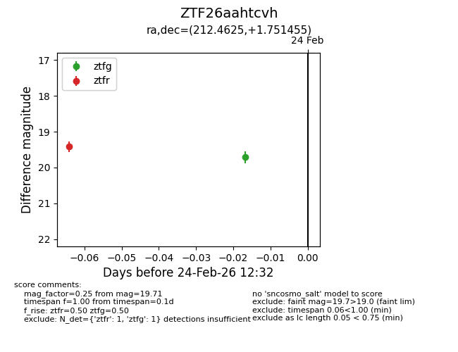
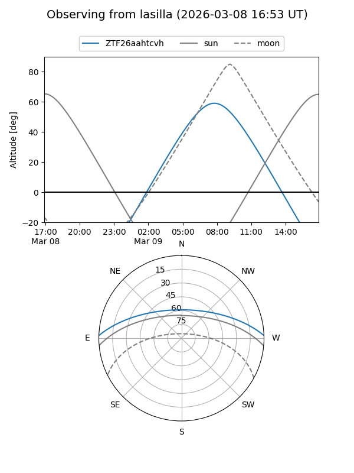
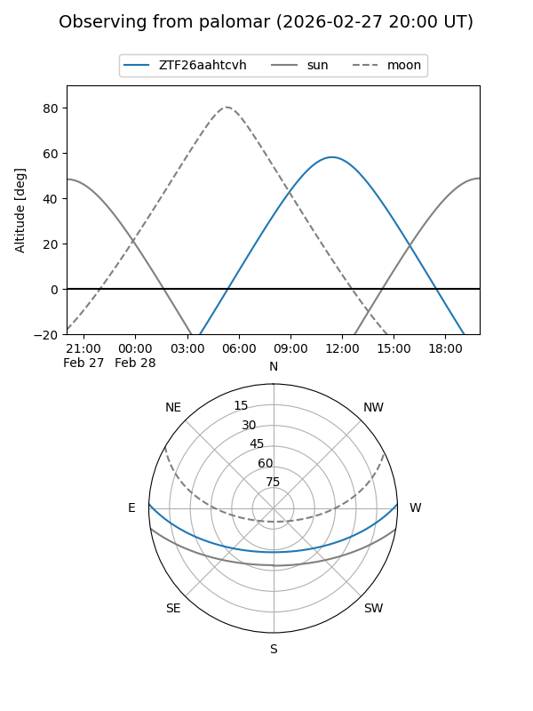
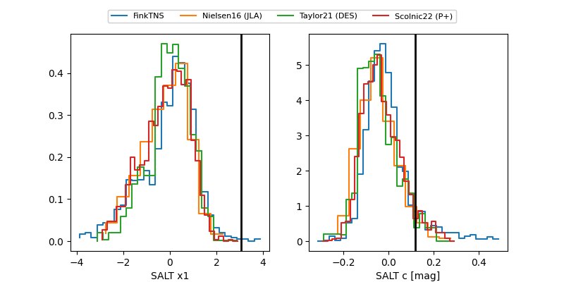

ZTF26aahtcvh
Target ZTF26aahtcvh at 2026-02-24 12:33
Aliases and brokers:
FINK: link
Lasair: link
ALeRCE: link
alt names
ZTF26aahtcvh (ztf,fink_ztf)
Coordinates:
equatorial (ra, dec) = 212.4625,+1.75146
equatorial (HMS+DMS) = 14:09:51.00,+01:45:05.24
galactic (l, b) = (342.7557,+58.42431)
Flags:
Photometry:
last ztfg=19.71, ztfr=19.42
1 ztfg, 1 ztfr detections
Lightcurve

Visibility


Additional plots
